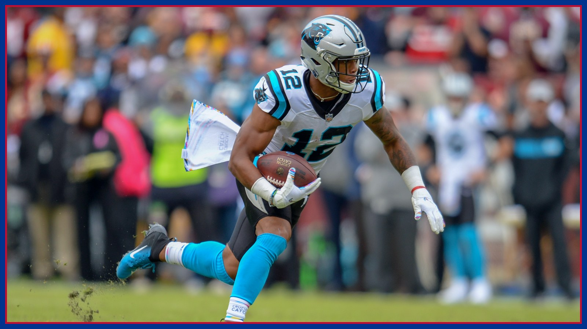

DJ Moore is finally off the injury report. Sunday at the Jets is his takeoff game.
For the first time in seven weeks, DJ Moore is not on the Buffalo Bills' injury report, per Buffalo Bills on SI. Nearly two months after his September 17 shoulder injury, Buffalo's No. 1 receiver was a full go Wednesday — just in time for today's 1 PM ET game at the Jets.

The most encouraging line on the Buffalo Bills' final injury report for Jets week is a name that is not on it. Buffalo listed five offensive starters on its official Week 10 report, per Buffalo Bills on SI, but for the first time in seven weeks, wide receiver DJ Moore was not one of them. Moore appears to have finally returned to full strength, per the same reporting — nearly two full months after he suffered a shoulder injury against the Detroit Lions on September 17 — and he opened Jets week as a full go in Wednesday's practice. No designation, no red jersey, no asterisk. When the Buffalo Bills (7-1) kick off against the New York Jets (2-7) today at 1 PM ET at MetLife Stadium on CBS, their No. 1 receiver is simply a football player again.
The road here was longer than anyone in Orchard Park planned. Moore's shoulder separation was not supposed to be a long-term issue, per Bills on SI: he was available in Week 3 against the Los Angeles Chargers, only 10 days after the injury, and he has appeared on the injury report daily since that week. Then came Week 4 against New England, where he reaggravated the shoulder falling to the ground trying to make a catch near the sideline, per the same reporting. Buffalo held its top receiver out in Weeks 5 and 6 heading into the Week 7 bye — the first game action Moore had missed since December 2020 — and he did not hide what that felt like coming off the bye: "The two weeks [out], it was pretty sad. I was mad at myself," Moore said, per Bills on SI. "I don't be wanting to miss time. I be wanting to be out there with the guys."
His return, when it came, looked like the player Buffalo traded for. Moore came back on November 1 against Baltimore and made four receptions for 82 yards and a touchdown, per Bills on SI — including a 49-yard reception on a 50-50 ball against the Ravens — and he avoided a potential knee problem on his final catch. Last week the Bills still slow-played him through the practice week, limiting his participation and keeping him in a red non-contact jersey, per the same reporting, but he carried no designation into Monday night at Minnesota and recorded 47 snaps, a 59 percent share, with Buffalo even using him on a couple of wide receiver screens — one of which was scored as an 11-yard rush. The training wheels were visible all week in practice. On game night, they were mostly off.
Why does a clean report matter this much for a player with 19 receptions for 285 yards and two touchdowns this season, plus four rushes for 20 yards, per Bills on SI? Because those numbers describe an interrupted season, not the role. Josh Allen said it plainly, per the same reporting: "He gives us that downfield presence, the run after the catch stuff." Moore is the one Buffalo receiver who stretches a defense vertically and turns a screen into a first down, and his presence changes how much attention Dalton Kincaid and Khalil Shakir see underneath. Buffalo enters today with the NFL's highest-scoring offense at 32.0 points per game and a league-leading 386.4 yards per game, per NBC Sports' preview — and it built that ranking while its top receiver was missing, limited, or wearing a red jersey for most of two months. Today, for the first time since mid-September, the full version is available.
The timing is not a luxury, either. Buffalo's offense still has one real question today: right tackle Spencer Brown (ankle) is doubtful after not practicing Thursday or Friday, per the official Friday report, and Tylan Grable is in line to start there after starting at left tackle in Minnesota. The rest of the line healed up around that hole — left tackle Dion Dawkins (rib), left guard Alec Anderson (ankle), center Connor McGovern (neck) and Kincaid (ankle) all finished the week full with no designation, per the same report. A healthy Moore does not block anybody, but he punishes the thing a defense does when it smells a backup tackle: load up, blitz, and dare the quarterback to hold the ball. A true downfield threat who can win quickly is how an offense answers that without asking its patched edge to hold up forever.
Moore is not the only reinforcement arriving today, either. On Saturday, Buffalo activated defensive back Jordan Hancock from injured reserve and released defensive back Te'Cory Couch to make room, per the Democrat and Chronicle, and elevated practice-squad quarterback Shane Buechele — the team's only elevation this week, and his first of the season, with neither Josh Allen nor backup Kyle Allen on the injury report. Hancock missed six consecutive games after suffering a hamstring injury against Detroit in Week 2, per the same reporting; the Bills opened his 21-day return window on November 4, and he was a full participant throughout this week. His activation comes four days after Buffalo acquired safety Amani Hooker at the trade deadline — a secondary that was patching holes a week ago suddenly has options, on the same weekend its top receiver stopped needing them managed.
None of this prints Moore as a guaranteed 100-yard afternoon, and this desk will not turn a missing name on a report into a medical certificate. Shoulder injuries that have already been reaggravated once deserve respect, and Sunday's inactives, about 90 minutes before kickoff, remain the last word on Brown, on cornerback Christian Benford (wrist, questionable) and on Jets receiver Garrett Wilson (concussion, questionable). But Moore's week needs no qualifier at all: full go Wednesday, absent from the final report, seven weeks of daily injury listings finally over. Buffalo spent two months protecting its No. 1 receiver. Today at MetLife, it gets to use him. Go Bills — and get every Jets fallout update in your inbox tomorrow morning with The BNC Blitz.